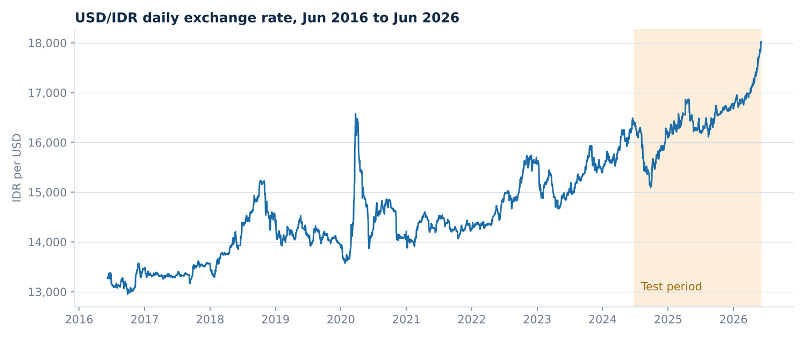
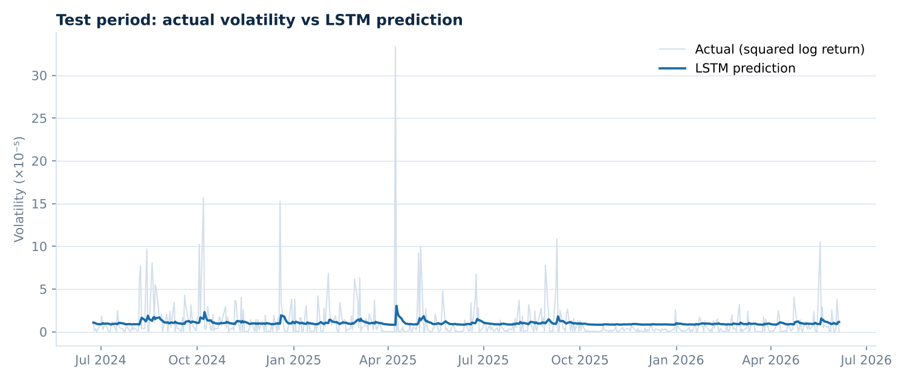

Ten years of daily exchange rates, three neural networks tuned and compared, and a Streamlit dashboard that forecasts the next 30 business days.
How volatile will the rupiah be over the next 30 business days, and which neural network forecasts volatility best? Volatility matters for anyone who prices, hedges or budgets in dollars, but it is hard to predict because most days are quiet and a few are extreme.

| Model | RMSE train | RMSE test | % in 95% interval, train | % in 95% interval, test |
|---|---|---|---|---|
| LSTM | 6.61 × 10−5 | 2.349 × 10−5 | 94.25% | 94.32% |
| GRU | 6.41 × 10−5 | 2.364 × 10−5 | 94.79% | 95.11% |
| CNN | 6.67 × 10−5 | 2.361 × 10−5 | 94.49% | 95.11% |
The LSTM has the smallest test RMSE, while GRU and CNN come closer to the 95% coverage target. The three test RMSEs are within 1% of each other, so the choice is a close call rather than a clear win.

The model forecasts the 30 business days from 8 June to 17 July 2026 one step at a time, feeding each prediction back in. Predicted volatility settles near 1.0 × 10−5, a typical daily move of about 0.32%. A multi-step forecast like this drifts toward the long-run average, so it describes a calm baseline rather than specific shocks.
The results are wrapped in a Streamlit app with six tabs: exploratory overview, model comparison, confidence intervals, the 30-day forecast, tuned hyperparameters, and a tab where a user can upload their own series for a quick forecast. The interface text is in Indonesian.